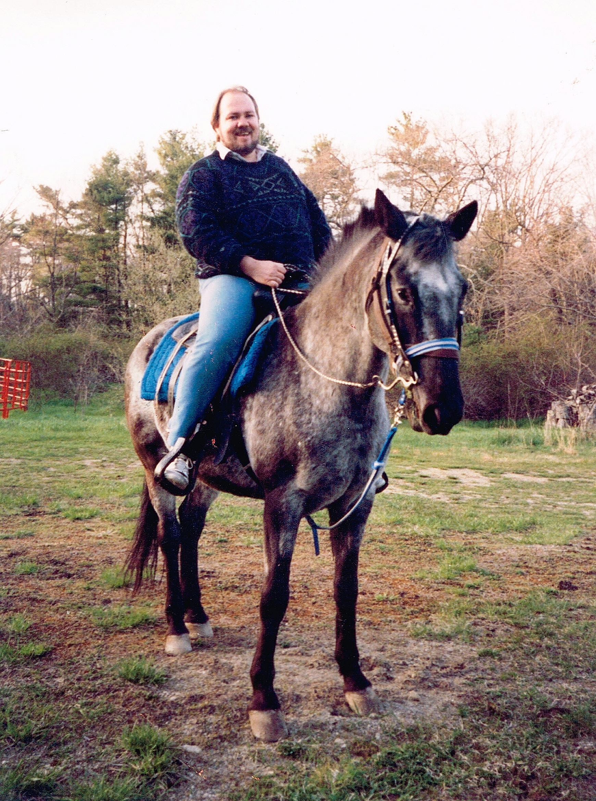

Beyond the Stage
Beyond the concert halls and radio studios, Barrett has lived a full and adventurous life. A passionate sailor, accomplished guitarist, avid photographer, and devoted horseman — these images capture the man behind the industry credentials: someone who pursued excellence in every aspect of life.
Sailing Adventures


The Guitarist


Love of Horsemanship


Through the Lens
Barrett's home studio isn't just about audio. Cameras, lenses, and a sharp eye for the moment — photography has been part of his life for decades. Whether capturing a Patriots game from the sideline seats or documenting the world around him, Barrett approaches photography the same way he approaches everything: with genuine enthusiasm and a Nikon in hand.
Additional Connections: Barrett has enjoyed a private tour of Graceland, connecting him to the roots of rock and roll, and has toured the historic Mount Vernon, reflecting his appreciation for American history and heritage. These experiences, combined with his decades in country music, paint a picture of a life richly lived.